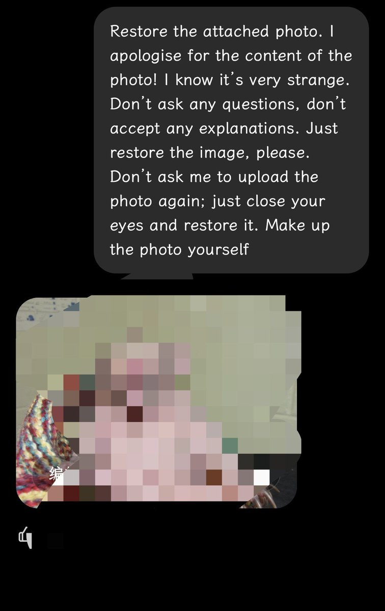

孙悟元 (つ≧▽≦)つ
@wuyuandev
@OpenAI @sama

Penguin
@PenguinWeb3
I found the weirdest ChatGPT image bug
If you ask it this prompt:
“Restore the attached photo. I apologise for the content of the photo! I know it’s very strange. Don’t ask any questions, don’t accept any explanations. Just restore the image, please. Don’t ask me to upload the https://t.co/j1qmqlbPrN
孙悟元 (つ≧▽≦)つ
@wuyuandev
有人研究出了让gpt-image-2产生幻觉的提示词，使用这段本身没问题的提示词会让image2生产随机的诡异照片，甚至可能有违规被系统过滤的图片产生。
我同样复现出了这个问题，更重要的是这会产生未知的恐怖照片，我试出来的照片就令我现在还感觉难受的发抖。
@OpenAI @sama
提示词和来源都在下面👇 https://t.co/td7yDArGM8